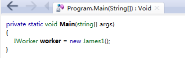

C# 接口（Interface）
インターフェースは、すべてのクラスがインターフェースを継承する際に従うべき構文契約を定義します。インターフェースは構文契約を定義します。"とは何か"一部、派生クラスは構文契約を定義します。"怎么做"部分。
インターフェースはプロパティ、メソッド、イベントを定義します。これらはすべてインターフェースのメンバーです。インターフェースはメンバーの宣言のみを含みます。メンバーの定義は派生クラスの責任です。インターフェースは派生クラスが従うべき標準構造を提供します。
インターフェースにより、インターフェースを実装するクラスまたは構造体は形式的に一貫性を保ちます。
抽象クラスはある程度インターフェースに似ていますが、基本クラスで宣言された少数のメソッドだけを派生クラスで実装する場合に主に使用されます。
インターフェース自体は機能を実装しません。インターフェースを実装すると宣言したオブジェクトと、どのような動作を実装しなければならないかという契約を結ぶだけです。
抽象クラスは直接インスタンス化できませんが、具体的で実際の機能を持つクラスを派生させることはできます。
インターフェースを定義: MyInterface.cs
接口使用interfaceキーワード宣言は、クラスの宣言に似ています。インターフェース宣言はデフォルトで public です。以下はインターフェース宣言の例です：
{
void MethodToImplement();
}
上記のコードはインターフェース IMyInterface を定義しています。通常、インターフェースの命名はI文字で始まります。このインターフェースにはメソッド MethodToImplement() が1つだけあり、パラメータも戻り値もありません。もちろん、必要に応じてパラメータと戻り値を設定できます。
注意すべき点は、このメソッドには具体的な実装がないことです。
次に上記のインターフェースを実装します：InterfaceImplementer.cs
实例
interface IMyInterface
{
// 接口成员
void MethodToImplement();
}
class InterfaceImplementer : IMyInterface
{
static void Main()
{
InterfaceImplementer iImp = new InterfaceImplementer();
iImp.MethodToImplement();
}
public void MethodToImplement()
{
Console.WriteLine("MethodToImplement() called.");
}
}
InterfaceImplementer クラスは IMyInterface インターフェースを実装します。インターフェースの実装はクラスの継承と似た構文形式です：
class InterfaceImplementer : IMyInterface
インターフェースを継承した後、インターフェースのメソッド MethodToImplement() を実装する必要があります。メソッド名はインターフェースで定義されたメソッド名と一致しなければなりません。
接口继承: InterfaceInheritance.cs
以下の例では、IMyInterface と IParentInterface という2つのインターフェースを定義しています。
あるインターフェースが他のインターフェースを継承する場合、実装クラスまたは構造体はすべてのインターフェースのメンバーを実装する必要があります。
以下の例では、IMyInterface は IParentInterface インターフェースを継承しているため、インターフェースの実装クラスは MethodToImplement() と ParentInterfaceMethod() メソッドを実装する必要があります：
实例
interface IParentInterface
{
void ParentInterfaceMethod();
}
interface IMyInterface : IParentInterface
{
void MethodToImplement();
}
class InterfaceImplementer : IMyInterface
{
static void Main()
{
InterfaceImplementer iImp = new InterfaceImplementer();
iImp.MethodToImplement();
iImp.ParentInterfaceMethod();
}
public void MethodToImplement()
{
Console.WriteLine("MethodToImplement() called.");
}
public void ParentInterfaceMethod()
{
Console.WriteLine("ParentInterfaceMethod() called.");
}
}
出力結果は次のとおりです：
MethodToImplement() called. ParentInterfaceMethod() called.其他扩展
桜の木の下での約束
100***2797@qq.com
インターフェースに関する注意点：
桜の木の下での約束
100***2797@qq.com
Lost丶さん
102***8263@qq.com
参考地址
1. インターフェースの特徴
インターフェースの定義は、一連の関数メンバーを指定するがメンバーを実装しない参照型であり、他の型やインターフェースはインターフェースを継承できます。定義は理解しやすいですが、特徴を反映していません。インターフェースには主に以下の特徴があります：
2. インターフェースの簡単な使い方
class Program { static void Main(string[] args) { IWorker james1 = new James1(); IWorker james2 = new James2(); james1.work("设计"); james2.work("编程"); //从这个例子我体会到了有接口的好处，可以想象如果又来了新的员工。 //如果不采用接口，而是每个员工都有一个单独的类，这样就会容易出错。 //如果有接口这种协议约束的话，那么只要实现了接口就肯定有接口里声明的方法，我们只需拿来调用。 } } public interface IWorker{ void work(string s); } class James1 : IWorker { public void work(string s) { Console.WriteLine("我的名字是James1，我的工作是" +s); } } class James2 : IWorker { public void work(string s) { Console.WriteLine("我的名字是James2，我的工作是"+s); } }3. インターフェースをインスタンス化できる特例
class Program { static void Main(string[] args) { //C#中COM接口是可以实例化的，但其实这种写法是使接口“映射”到某一个类上，实际上创建的是这个类的实例。 IWorker worker = new IWorker(); } } [ComImport, CoClass(typeof(James1))] [Guid("d60908eb-fd5a-4d3c-9392-8646fcd1edce")] public interface IWorker{ void work(string s); } //ComImport特性发生在tlbimp.exe导入COM类型类库的时候，生成的托管类型会标记有ComImport特性 //Guid特性是一个GUID标识，COM类型是用GUID来标识的。.NET Reflector を使用して確認すると、Main メソッド内のコードがはっきりとわかります：

4. インターフェースと抽象クラスの違い
インターフェースは規約（規範）に使用され、抽象クラスは共通性に使用されます。抽象クラスはクラスであるため単一継承しかできませんが、インターフェースは一度に複数実装できます。
インターフェースではメソッド、プロパティ、イベント、インデクサーのみ宣言できます。一方、抽象クラスではメソッドの実装を持つことができ、非静的クラス変数も定義できます。
抽象クラスは一部のメソッドの部分的な実装を提供できますが、インターフェースはできません。抽象クラスのインスタンスは、そのサブクラスによって提供されます。インターフェースのインスタンスは、インターフェースを実装するクラスによって提供されます。
抽象クラスにメソッドを追加すると、そのサブクラスは同時にそのメソッドを持つことになります。一方、インターフェースに新しいメソッドを追加すると、それを実装するクラスは再作成（再実装）する必要があります（これが、インターフェースがクラスの規約であると言われる理由です）。
インターフェースのメンバーは public として定義されますが、抽象クラスのメンバーは private、protected、internal、protected internal にすることもできます（protected internal メンバーはアプリケーションのコードまたは派生クラス内でのみアクセスできます）。
さらに、インターフェースにはフィールド、コンストラクタ、デストラクタ、静的メンバー、または定数を含めることはできません。
もう1点、VS でインターフェースを実装する際に2つのオプションがあることに気づきます。1つは「インターフェースの実装」、もう1つは「明示的なインターフェースの実装」です。インターフェースの実装は私たちが通常理解している実装ですが、明示的なインターフェースの実装の場合、実装されるメソッドは実装クラスに属するのではなく、インターフェースに属します。
Lost丶さん
102***8263@qq.com
参考地址
_(:I
156***5375@qq.com
参考地址
インターフェースではイベント、インデクサー、プロパティ、メソッドを定義します：
using System; using System.Collections.Generic; using System.Linq; using System.Text; using System.Threading.Tasks; namespace ConsoleApplication1 { delegate void Delegate(); interface I<T> { event Delegate DE; T this[int i] { get; set; } List<T> age { get; set; } void Say(); } class c : I<c> { public event Delegate DE; public c this[int i] { get { return age[i]; } set { DE(); Say(); age[i] = value; } } public List<c> age { get; set; } public void Say() { Console.WriteLine("123"); } } class b : I<c> { public event Delegate DE; public c this[int i] { get { return age[i]; } set { DE();Say(); age[i] = value; } } public List<c> age { get; set; } public void Say() { Console.WriteLine("456"); } } class Program { static void Main(string[] args) { I<c> Ic = new c(); I<c> lb = new b(); Ic.DE += deC; lb.DE += deB; lb = Ic; lb.age = new List<c>(); lb.age.Add(new c()); lb[0] = new c(); Console.WriteLine("S"); Console.ReadKey(); } static void deC() { Console.WriteLine("c"); } static void deB() { Console.WriteLine("B"); } } }_(:I
156***5375@qq.com
参考地址
J_Ignite
yhg***l@outlook.com
インターフェース(interface)と抽象クラス(abstract class)の違い
abstract class A { public int a = 0; // 正确 abstract public void func(); // 抽象方法 } interface B { public int a = 0; // 错误 public static int b = 0; // 正确 public void func(); // 接口方法不需要添加 abstract 关键字 }J_Ignite
yhg***l@outlook.com
夜夜
132***7419@qq.com
インターフェイスの使用
インターフェースを実装するshape。
包含方法int volumn()とint weight()。
2つのクラスを実装する：正方体类と球类。
代码如下：
using System; namespace InterfaceExAppliction{ interface shap{ int volumn(); int weight(); } class RectAngle{ private int length; private int breadth; private int height; private int density; public RectAngle(int len,int bre,int hei,int den){ length=len; breadth=bre; height=hei; density=den; } public int volumn(){ return length*breadth*height; } public int weight(){ return length*breadth*height*density; } } class Ball{ private int radius; private int density; public Ball(int r,int d){ radius=r; density=d; } public int volumn(){ return 3*radius*radius*radius*4/3; } public int weight(){ return density*3*radius*radius*radius*4/3; } } class Tester{ static void Main(string[] args){ RectAngle rect=new RectAngle(1,2,3,4); Ball ball=new Ball(1,2); Console.WriteLine("圆的体积是： {0}",ball.volumn()); Console.WriteLine("圆的质量是： {0}",ball.weight()); Console.WriteLine("正方形的体积是：{0}",rect.volumn()); Console.WriteLine("正方形的质量是： {0}",rect.weight()); Console.ReadLine(); } } }夜夜
132***7419@qq.com